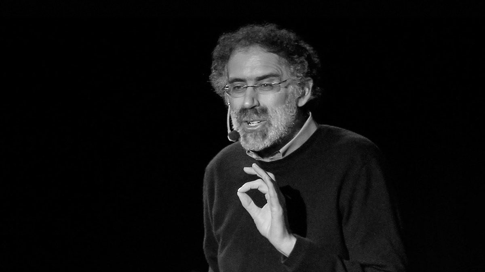

The RISD Presidential Speaker Series offers a forum for welcoming some of the most expansive thinkers of our times to campus. Each speaker is a master of his or her domain but is also ready to transcend it, sharing the RISD community’s own belief in the fruitful exchange of ideas that happens when artists, designers, activists, scientists and other scholars really talk and listen to each other.
Feb 25 / 6:30 PM
RISD Auditorium
Jun 15 / 7:00 PM
Fleet Library

Nov 06 / 6:30 PM
Chace Center